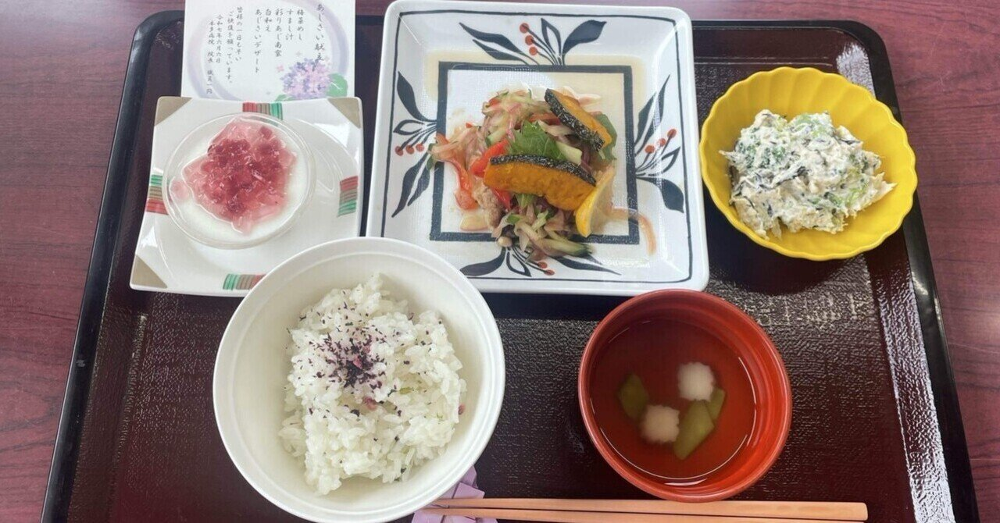

03-3732-2331代表／急患24時間受付

入院の準備、費用の目安、面会のご案内をまとめています。
入院は、治療のための時間であると同時に、退院後の暮らしに戻るための準備期間でもあります。医師・看護師・リハビリスタッフ・管理栄養士がチームで、ご自宅に帰るところまでを見据えて関わります。
外来の診察、または他院からのご紹介により、医師が入院の必要性を判断します。
入院の目的、おおよその期間、費用について、ご本人・ご家族にご説明します。ご不明な点はお尋ねください。
入院当日、受付で手続きをお願いします。必要書類と持ち物をご持参ください。
病棟の看護師が、病室や設備についてご案内します。
理学療法士・作業療法士・言語聴覚士が、病状に合わせてリハビリテーションを行います。運動器（Ⅱ）・呼吸器（Ⅰ）・脳血管疾患等（Ⅲ）のリハビリテーションに対応しています。
「退院してからどう暮らすか」を起点に、ご自宅の環境やご家族の状況もうかがいながら進めます。
管理栄養士が、病状に合わせたお食事をご用意します。季節の行事に合わせた行事食もお出ししています。
退院後の生活に不安がある場合は、ご相談ください。訪問診療、訪問看護、介護サービスなどにつなぐお手伝いをします。当院の在宅医療や、関連施設の介護老人保健施設「コージーハウスはすぬま」もご利用いただけます。
面会時間、人数の制限、小さなお子さまの同伴可否、感染症流行期の対応などを記載する予定です。現在の運用をご教示ください。
健康保険が適用されます。負担割合やお持ちの医療証によって自己負担額は異なります。
病室の種類と差額ベッド代、お支払い方法（現金・クレジットカードの可否）を記載する予定です。